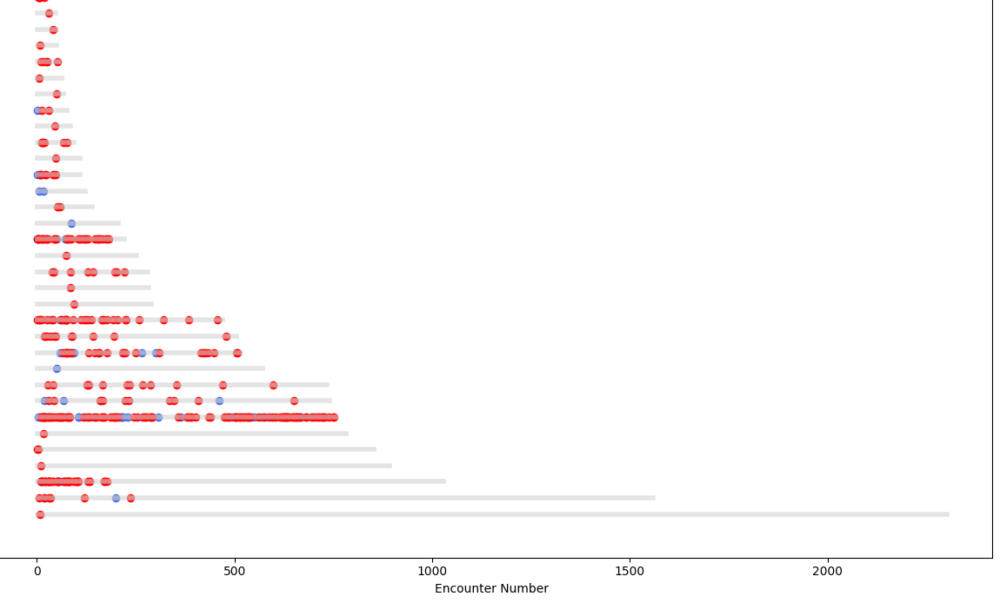
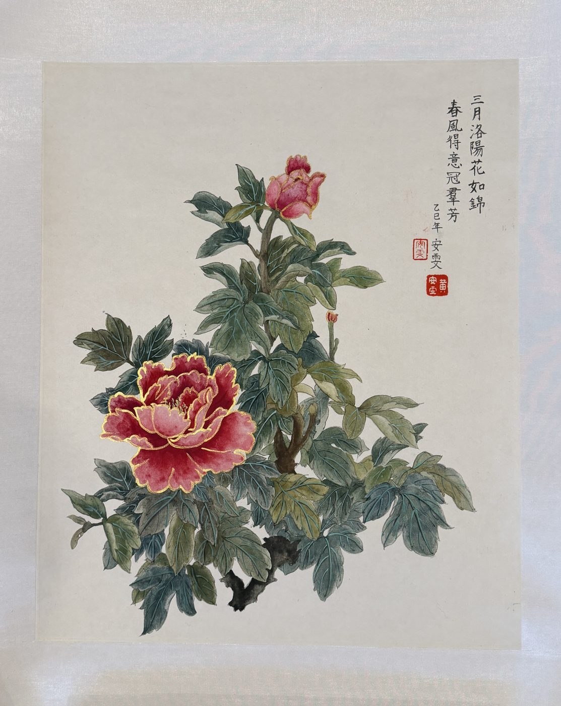

Anwen Huang

Ph.D. student in Computer Science, UCLA

I'm a first-year Ph.D. student in Computer Science at UCLA, advised by Prof. Wei Wang in the Scalable Analytics Institute (ScAI). I work on machine learning for healthcare, with a focus on multimodal foundation models and large language models.
At UCLA, I'm currently building foundation models and agentic pipelines for cancer clinical decision support that combine CT imaging, pathology, genomics, and clinical notes. With Prof. Irene Chen's lab at Berkeley AI Research (BAIR), I study the patient-safety risks of AI clinical scribes using sparse autoencoders and LLM-as-judge evaluation. Before that, I built LLM pipelines for pathology report extraction and deep learning models for T-cell receptor binding at UCSF.
I received B.A. degrees in Computer Science and Statistics from UC Berkeley in 2026.
Feel free to reach out if you'd like to chat about research, potential collaborations, or anything else!
Publications

 Figure: Le et al., 2025, CC BY 4.0
Figure: Le et al., 2025, CC BY 4.0 Evaluation of Large Language Model-Based Extraction of Neuroendocrine Neoplasm Variables from Pathology Reports
Evaluation of Large Language Model-Based Extraction of Neuroendocrine Neoplasm Variables from Pathology Reports
Experience
Projects
Writing
In my free time, I like to jot down my thoughts on topics that interest me or problems I've encountered. You can read more below or on my Substack.
- Sep 2026
- Jun 2026
- Jun 2026
- Apr 2026
- Mar 2026
Art
I'm also an avid artist! I've done Chinese brush painting, oil, and colored pencil since I was young, and art has given me an eye for small details and careful work.
